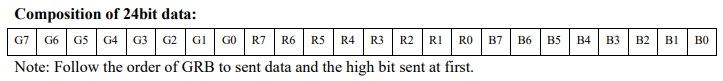

Train Tracker
This is a live led map that displays where each train is on one of Chicago's train routes. I was inspired by traintrackr maps and wanted to build my own on a smaller scale.
Supplies
- WS2812B addressable RGB pixels (x66)
- ESP32 board
- 1000 uF capacitor
- 1000 Ohm resistor (x2)
- 5V DC wall power adapter
- Female barrel jack adapter
Each pixel has four pins: VCC, GND, DIN, and DOUT. The DOUT of one pixel is connected to the DIN of another pixel, so the microcontroller only needs to send bits to the first pixel in the display to control all of them. The color and brightness of a pixel is determined by the 24 bits that are sent to it.
How the pixel determines if a bit is a 0 or 1 is by the number of nanoseconds DIN is high then low.
- T0H High voltage time for 0 code 400ns ± 150ns
- T0L Low voltage time for 0 code 850ns ± 150ns
- T1H High voltage time for 1 code 800ns ± 150ns
- T1L Low voltage time for 1 code 450ns ± 150ns
- Treset Low voltage time for reset code >50us
Initally, I tried to use Expressif's ESP-IDF GPIO driver to controll the pin outputs, but when measuring how fast the ESP32 pins could switch from high to low and low to high, it was much too slow for the pixels. I had to directly change the bits of the microcontroller's registers, who addresses can be found in the technical reference manual. I then added nops to delay clock cycles for better timing.
I used the ESP32 for this project for its built-in WiFi support, allowing me to request train data from Chicago Transit Authority's (CTA) API. From that data I knew which station each active train on the blue line was at or heading towards.
To light up the pixels I created an array that could store 198 16-bit numbers, 3 for each of the 66 pixels that controlled how much green, red, and blue a pixel will emit and that can be set from 0 to 255. That array is then turned into a binary signal that is output from a valid pin.
As I was coding I kept in mind that I might want to extend this project to include other lines of Chicago's metro system. So if I wanted to add other tracks it could be done fairly easily and none of the existing methods would have to be modified.
Below on the left is a picture of my pixel display, and on the right is a screenshot of CTA's live train tracker map taken at the same time.